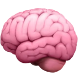

Palacio Estadístico
Análisis Estadístico II · 1er parcial

Esta página necesita JavaScript para mostrar los resúmenes, el palacio y los jefes.
Creado por Matias Rodrigo Bellido
Estudiante de Ciencias Actuariales y analista de datos. ¿Adónde querés ir?

 0 puntos de experiencia
0 puntos de experiencia
 0 correctas seguidas
0 correctas seguidas